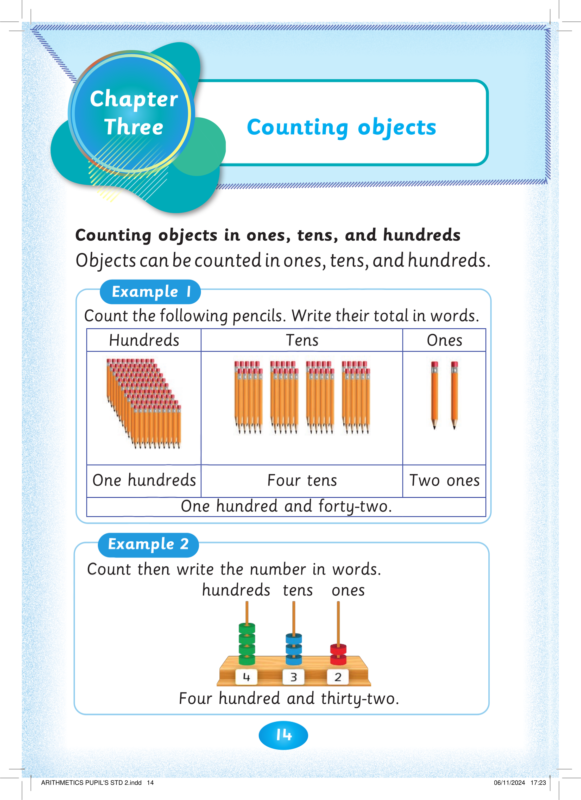
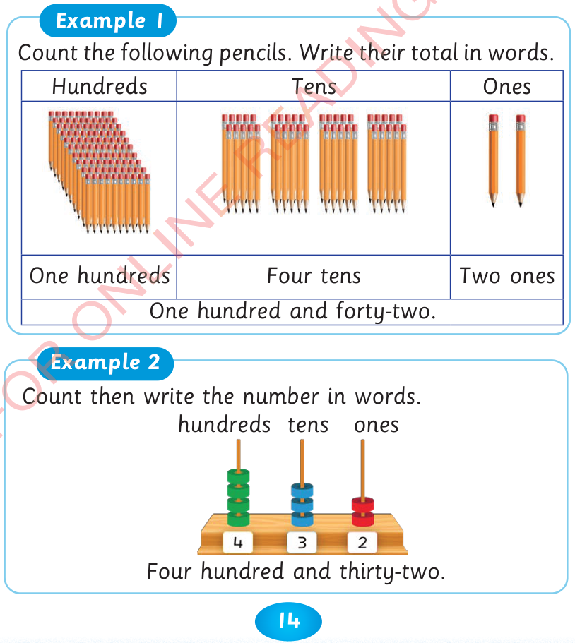

14

Counting objects in ones, tens, and hundreds
Objects can be counted in ones, tens, and hundreds.
Example 1
Count the following pencils. Write their total in words.
Hundreds
Tens
Ones


One hundreds
Four tens
Two ones
One hundred and forty-two.
Example 2
Count then write the number in words.
Four hundred and thirty-two.
hundreds
tens
ones


Counting objects
Chapter
Three


ARITHMETICS PUPIL'S STD 2.indd 14
06/11/2024 17:23